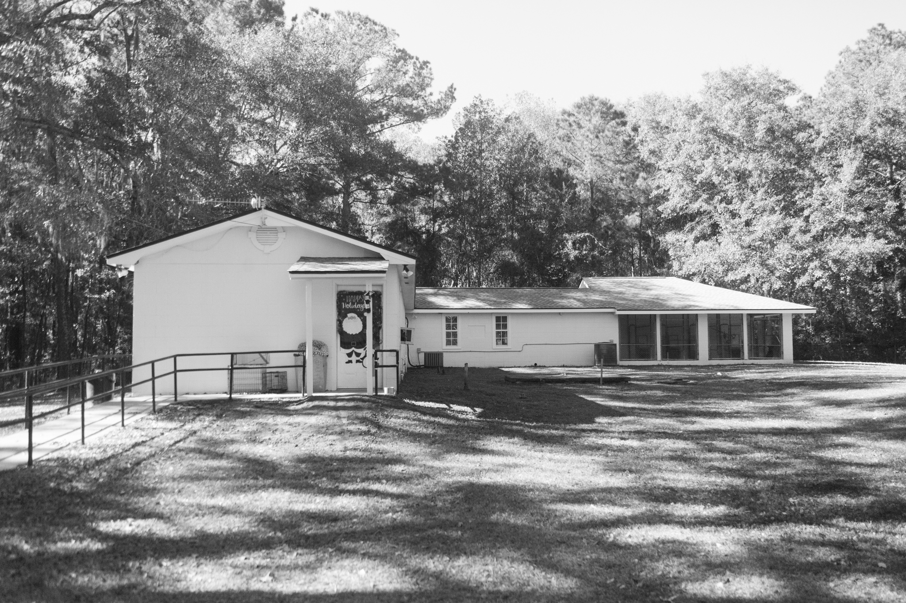
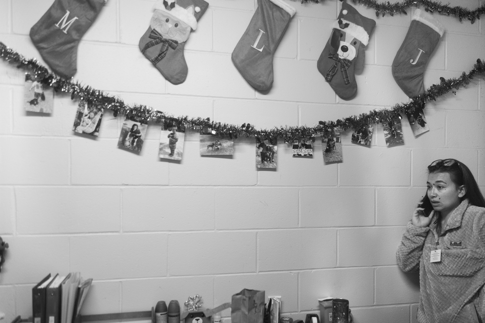
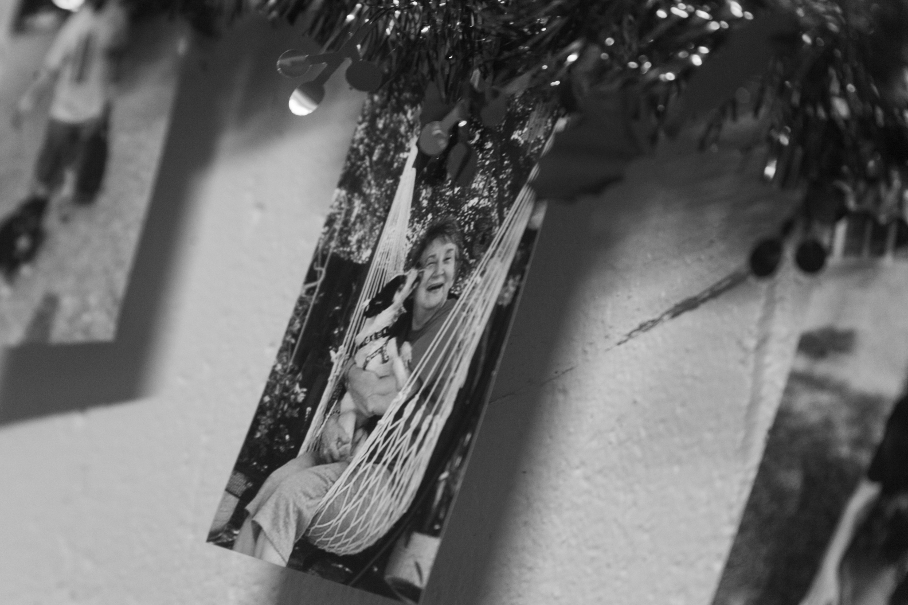
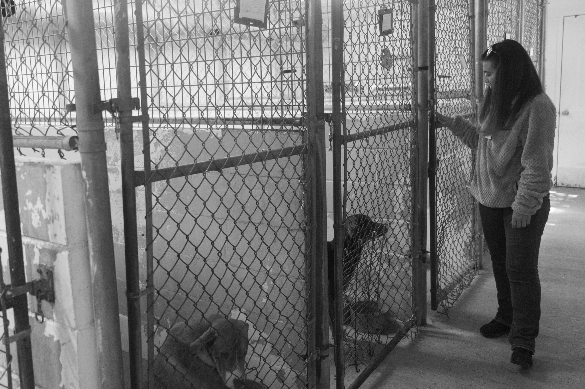
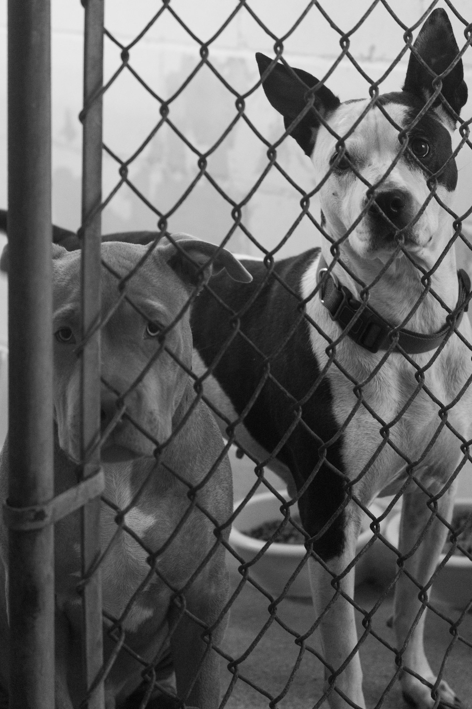
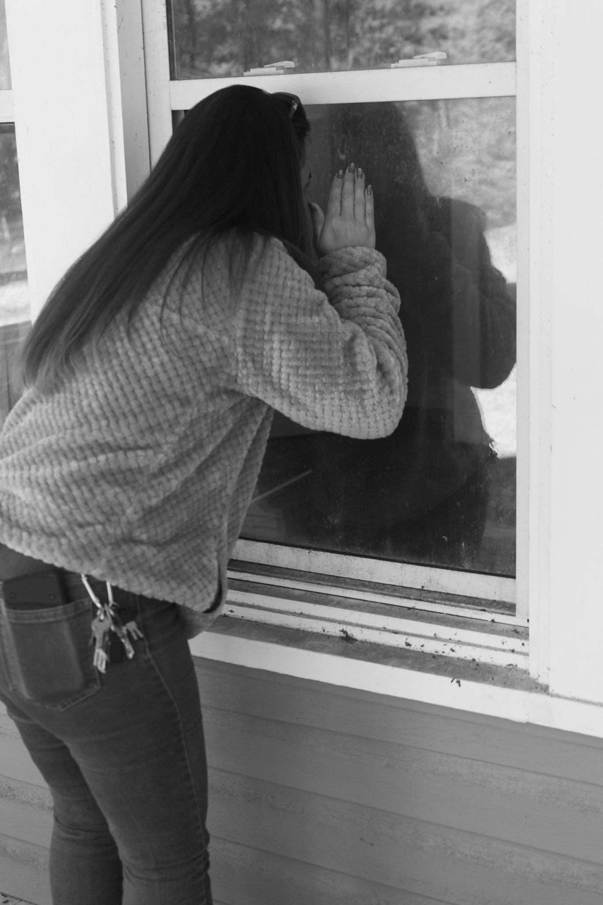
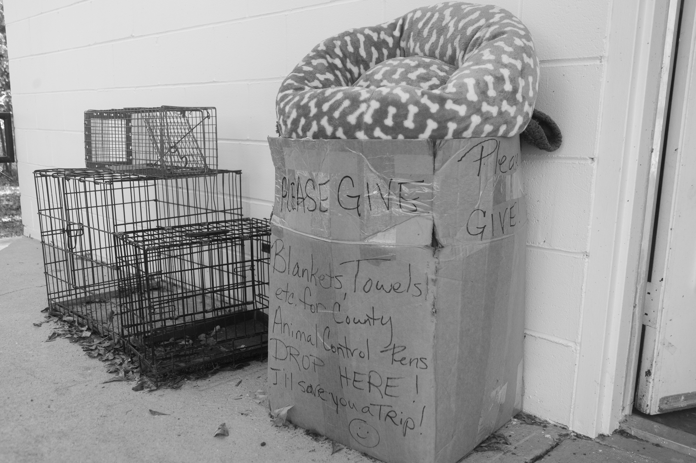
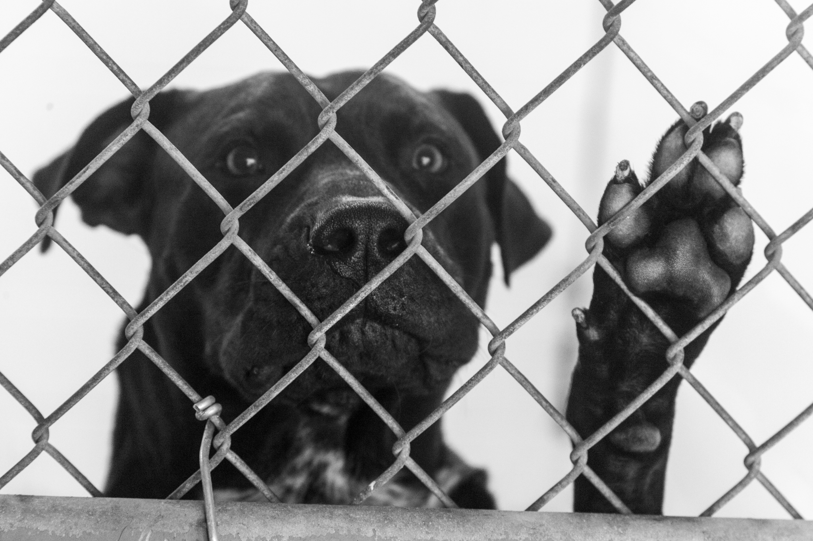

Bryan County Animal Control beyond capacity
 Bryan County, Georgia, comprises 454 square miles, including the Fort Stewart military installation. Bryan County Animal Control has two shelters with 15 total kennels for housing abandoned, neglected, surrendered, or lost animals. BCAC’s Richmond Hill location is pictured above. (Eve Sampson/JOUR670)
 Bryan County Animal Control Manager Laura Lewis takes a phone call from a woman trying to surrender her dog for euthanasia at the Richmond Hill, Georgia, animal shelter over the Thanksgiving holiday period. These calls are commonplace for animal control workers, who work with the public and local animal rescues to avoid space-related euthanasia. (Eve Sampson/JOUR670)
 The shelter office is decorated for the holidays. Photos of adopted dogs with their new families hang from garland. The employees also hang photos of dogs who were accepted into rescue groups. These photos exemplify the “success stories” – the dogs who made it out alive. (Eve Sampson/JOUR670)
 Lewis checks on the dogs currently housed at the Richmond Hill shelter. She says the county is seeing many more dogs come through the shelter than in previous years. (Sampson/JOUR670)
 Lewis tries to conserve space whenever possible. She often houses friendly dogs in the same kennel in an attempt to conserve kennel space. BCAC is required to accept any dog surrendered into their care. When there is not enough space, shelter employees must make decisions about euthanasia. (Sampson/JOUR670)
Aside from managing shelter intake, animal control officer duties include house calls to check on reports of animal abuse, neglect, and violence. Lewis drives to a mobile home community to visit a woman accused of animal abuse by a roommate. (Sampson/JOUR670)
 Lewis checks on a report of a dog abandoned in a vacant home. Economic stresses may contribute to people abandoning their homes and leaving behind their pets. (Sampson/JOUR670)
 BCAC runs on an extremely small budget. Employees often ask the community for donations to help the increasing number of animals in their care. (Sampson/JOUR670)
 Dogs peer out of their kennels and bark when people approach the building. Lewis tries to schedule surrenders with owners looking to abandon their animals instead of having them drop dogs off. This way, she says, she can manage the numbers keeping as many alive as possible. (Sampson/JOUR670)
Dogs peer out of their kennels and bark when people approach the building. Lewis tries to schedule surrenders with owners looking to abandon their animals instead of having them drop dogs off. This way, she says, she can manage the numbers keeping as many alive as possible. (Sampson/JOUR670)
 Bryan County, like many other areas, does not have the resources to deal with the increased influx of abandoned and surrendered animals. Shelters have been regularly been full beyond capacity. Animal control employees are left to make decisions about which animals live or die. (Sampson/JOUR670)